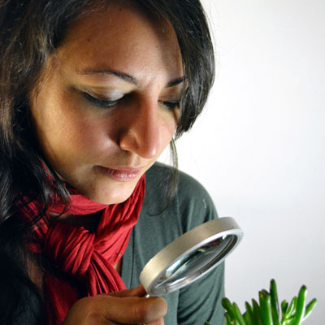
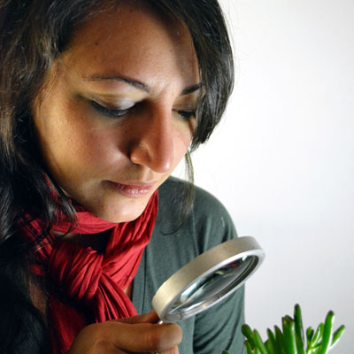
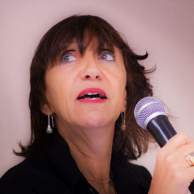
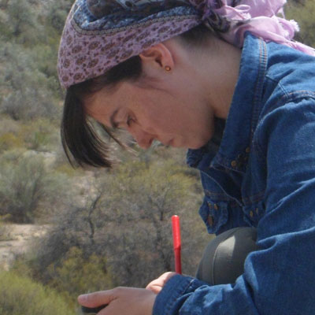
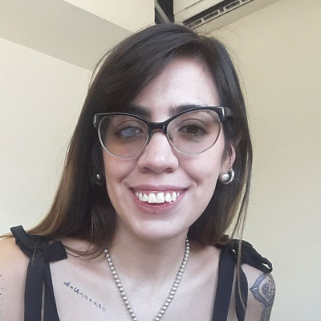
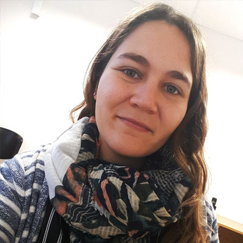
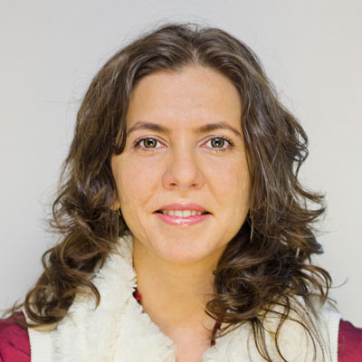

Genética de Plantas
Rosalia Cristina Paz
En el marco del Día Internacional de la Mujer 2019 reunimos más de 50 perfiles de #GrandesMujeres de la ciencia y la tecnología. Ellas son mujeres que lideran y trabajan en áreas en STEAM* y emprendedorismo, con el objetivo de descubrir talentos de toda la Argentina.
*STEAM: ciencia, tecnología, ingeniería, arte y matemáticas (por su acrónimo en inglés science, technology, engineering, art and mathematics).
¡Te invitamos a
conocerlas a través de sus trabajos
y dejarte inspirar con sus consejos!

Genética de Plantas
Rosalia Cristina Paz

neurociencias
Silvia Kochen

Geología
Aixa Inés Rodríguez

Ciencias Biológicas
Yesica Frontini López
Nanotecnología magnética
Verónica Lassalle
Micología
Claudia Cristina Lopez Lastra

matemáticas
Penélope Cordero González

biotecnología
Maria Cecilia Bustos
Arquitectura Bioclimática y Eficiencia Energética
Alba Ramos Sanz

Bioinformática
Gabriela Alejandra Merino
Fisiología, bioquímica y biología molecular
María Marina
filosofia
Mariana Alvarado
Química Analítica y Ambiental
Leticia Escudero
investigadora
Alicia Esther Ares
Vegetación urbana
María Angélica Ruiz

Microbiología
Virginia Albarracin
Sismología, Geofísica
Agostina Lía Venerdini
Ingeniería Metalúrgica
Vanesa Lucia Bazan Brizuela
clima urbano
Noelia Liliana Alchapar
Ecofisiología
Agustina Gallo
Bioanalítica, Nanotecnología
Sofía Piguillem Palacios
Ecofisiología vegetal
Lucia Nadia Biruk
Geoquímica
Paola Gabriela Orozco
Biología de la conservación
Sabrina Yasmin Bobadilla
Ciencias Informáticas
Verónica Artola
Sismología
Ana Carolina Rivas Bilbao
Eficiencia energética
Yesica Alamino Naranjo
Ingeniería en Sistemas
María Tobón Paredes
Ingeniería en Sistemas
Sofía García Carral
Ingeniería en Sistemas
Maite Rodríguez
Ingeniería en Sistemas
Gabriela Martínez
Ingeniería en Sistemas
Elina Lechere
Ingenieria En Sistemas
Melina Vidoni
bioingeniería
Victoria Peterson
Informática
Valeria Zoratto
Cs. de la computación
María Emilia Charnelli
biotecnología, microbiología
Julieta Amalia Burini
biotecnologia, microbiologia
Clara Bruzone
Aprendizaje profundo
Milagro Teruel
ciencia de los alimentos
María Lidia Herrera
ciencia de la computación
Elsa Estevez
veterinaria
Maria Clausse
inteligencia artificial
Ana Laura Diedrichs
ingenieria química
Cecilia Inés Paulo
materiales cerámicos avanzados
Julia Elena Tasca
geografia de genero
Magdalena Moreno
mineria de textos
Leticia Cecilia Cagnina
Informática
María Paula Villegas
Cs. de la computación
María José Garciarena Ucelay
Cs. de la computación
Celia Cintas
Este micrositio reúne los perfiles de mujeres que lideran y trabajan en áreas en STEAM y emprendedorismo, con el objetivo de descubrir talentos de toda la Argentina. Estas mujeres, curiosas y creadoras de conocimiento, comparten sus experiencias y mensajes inspiradores a través de textos, imágenes y audios, con el objetivo de motivar a las próximas mujeres argentinas en ciencia y tecnología.
Más de 40 becarias e investigadoras del CONICET, a través del programa Voc.Ar y mujeres que trabajan en organizaciones aliadas de Chicas en Tecnología compartieron sus voces. Ellas son de diferentes ciudades del país, realizan investigaciones en tecnología y ciencias como ingeniería, matemática y programación.
Necesitamos seguir visibilizando a nuestras mujeres argentinas líderes en STEAM y emprendimientos de todo el país para inspirar a la próxima generación de innovadoras en ciencia y tecnología.
Vos también podés ser parte de esta misión invitandolas a paneles, eventos, notas y otras oportunidades. Si querés postular a una mujer que te parece que debería estar en este micrositio, escribinos con el asunto “Mujeres en STEAM” a hola@chicasentecnologia.org
Gracias al apoyo de aliados y sponsorsGenética de Plantas
escucha su consejo
Actualmente estamos desarrollando marcadores genéticos para la identificación de variedades de hortaliza para una empresa que compra y multiplica semillas de hortalizas. Esto permite determinar en forma temprana (en el estadío de semilla) si una semilla se corresponde o no con la variedad que dice ser. De otra forma, se debería realizar la siembra y luego de varios meses se sabría si es lo que realmente se sembró, produciendo grandes pérdidas para la empresa. Imaginense que pasaría si un productor de tomate compra semillas para cultivar tomate de industria (madura todo junto) y termina plantando otra variedad de consumo en fresco (madura en forma escalonada). No hay forma que pueda cosechar y vender su producto como tenía planeado inicialmente, ya que cada variedad requiere su propia logística.
neurociencias
Trabajo en el estudio diagnóstico y terapéutico de los pacientes con epilepsia. El objetivo principal es mejorar la vida de las y los pacientes que tienen esta enfermedad. Pero como ocurrió desde siempre, el estudio de la epilepsia aporta conocimientos al funcionamiento del sistema nervioso en las/os seres humanos, en especial a comprender como trabajan las redes neuronales en funciones motoras, sensoriales y cognitivas, como la memoria y el lenguaje en especial
geología
escucha su consejo
La geología del Cuaternario es el estudio del tiempo más reciente en nuestra tierra. Se enfoca en conocer el suelo, las formas del relieve, la dinámica de los ríos, el cambio en los paisajes a lo largo del tiempo para saber dónde estamos pisando. Conocer el Cuaternario nos permite pensar donde vamos a construir una ciudad, para que luego los seres humanos no estemos expuestos a inundaciones, derrumbes, flujos de rocas y sedimentos, coladas de lavas y erupciones volcánicas, entre otras. Puede ser, por ejemplo, que actualmente un terreno no este ocupado por un río, y se planifique allí una ciudad o barrio… Pero las geólogas que trabajamos en Cuaternario podemos ir al campo y observar en los sedimentos si hay “rastros” de antiguos canales de un río o barras. Si encontramos estas pistas, podemos alertar a quienes planifican y hacer mapas de riesgo. Si por allí alguna vez paso el río, aunque hoy este a 200 metros, con una crecida extraordinaria hay probabilidades de que vuelva a ocupar su lugar. La naturaleza es dueña de sus espacios. Como geólogas podemos “diagnosticar” los sitios donde puede habitar el ser humano para evitar las catástrofes que tanto duelen después.
ciencias biológicas
escucha su consejo
Trabajo en el Laboratorio de Integración de Señales Celulares del Instituto de Histología y Embriología de Mendoza (IHEM – UNCuyo-CONICET) en donde me encuentro estudiando las vías de señalización que regulan el destino celular de células madre mesenquimales derivadas de tejido adiposo. Durante mi doctorado me he especializado no sólo en la determinación del destino de las células madre, sino también en el área de la medicina regenerativa y los biomateriales desarrollando matrices sintéticas biodegradables que mimeticen el microambiente celular de osteoblastos para generar implantes óseos con células madre alogénicas que tengan menor riesgo de enfermedad injerto contra huésped. Esta potencial herramienta sería de gran beneficio, particularmente en pacientes con osteoporosis o defectos óseos mayores en los cuales la capacidad innata del cuerpo de reparar o curar, a diferencia de lo que ocurre en defectos óseos pequeños, está ralentizada o ausente.
Nanotecnología magnética
escucha su consejo
La investigación que estamos desarrollando pretende solucionar o al menos contribuir a la solución de las problemáticas en las áreas de biomedicina y remediación ambiental. a partir del diseño y aplicación de nanopartículas magnéticas (NPMs). Al referirnos a nanopartículas estamos hablando de partículas de dimensiones del orden de los nanómetros (¡ 1 nm =0,000000001 m!) formadas por un corazón que presenta magnetismo recubierto con diferentes sustancias (como ácidos grasos, polímeros, péptidos, azúcares,etc.). Este recubrimiento les proporciona biocompatibilidad, tamaño adecuado y capacidad para reaccionar con las moléculas de interés en función de la aplicación planeada. Las propiedades magnéticas son las que vuelven a estos sistemas particularmente interesantes dado que pueden dirigirse, guiarse u orientarse por simple aplicación de un campo magnético externo (imán). De esta manera surgen nuevos materiales altamente versátiles que pueden adaptarse a las diferentes aplicaciones cambiando la naturaleza de las sustancias modificantes incorporadas al núcleo magnético. En el área biomédica los nanosistemas magnéticos se vienen empleando desde hace varias décadas, por ejemplo, como agentes de contraste en el diagnóstico por imágenes mediante resonancia magnética, agentes para hipertermia (ablación térmica en terapias antitumorales), como vectores capaces de ser dirigidos mediante la aplicación de un campo magnético externo hacia un sitio específico del organismo. En el marco de esta última aplicación se encuadra el empleo de las NPMs en la liberación dirigida de fármacos. La posibilidad de guiar a los nanosistemas al lugar donde se requiere el fármaco permitiría minimizar los efectos secundarios asociados a la mayoría de las drogas además de reducir las dosis administradas. Este tipo de beneficios son especialmente valorados para el tratamiento de enfermedades oncológicas o inflamatorias crónicas (artritis por ejemplo).
Micología
escucha su consejo
La investigación que estoy realizando desde hace tiempo se enfoca en la identificación, aislamiento , selección de hongos nativos a partir de insectos para su control. Estos hongos, que viven en casi todos los ambientes, pueden ser usados para control microbiano como "insecticidas biológicos" contra insectos plagas de la agricultura así como insectos vectores. Como objetivo final, la propuesta es producir un insecticida en base de hongos entomopatógenos, que pueda ser transferido a la empresa para su registro y comercialización, en lo cual estamos investigando arduamente, así como también en proyectos de extensión con productores hortícolas de la región.
matemáticas
Soy profesora de Matemática (UNSJ) y becaria doctoral CONICET con lugar de trabajo en el Instituto de Matemática Aplicada del Litoral (IMAL). Mi trabajo de tesis doctoral se enmarca en la disciplina de la lógica y se titula "Estudio lógico-algebraico de BL-álgebras Epistémicas". En la actualidad, los sistemas computacionales requieren tratar con una gran cantidad de información proveniente de diversas fuentes y los datos de los cuales proviene dicha información pueden ser imprecisos o inciertos. La necesidad de un manejo adecuado de la información motiva el estudio de los sistemas lógicos formales. En particular, aquellos razonamientos que son vagos o difusos, es decir que no pueden ser clasificados simplemente como verdaderos o falsos, se modelan a través de la lógica difusa (como la lógica básica BL), y los razonamientos cargados de incertidumbre (posibles o necesarios) se formalizan por medio de sistemas de lógica modal. En mi investigación, estudiamos un sistema que permite tratar razonamientos que combinan ambas características: vaguedad e incertidumbre. En este contexto, adoptamos un enfoque algebraico definiendo la clase de BL-álgebras epistémicas. Esta convergencia de análisis utiliza por un lado las BL-álgebras, como modelo de la lógica difusa BL, y por otro lado, operadores modales que modelan el conocimiento y la creencia, lo que se refiere a la lógica epistémica. Su importancia radica en el hecho de que estos sistemas lógicos intentan modelar el pensamiento humano y tienen gran utilidad en el desarrollo de inteligencias artificiales.
biotecnología
escucha su consejo
Me encuentro realizando una investigación en el marco del Doctorado en Ciencias Biomédicas de de UCCuyo de San Juan, a través de una beca de Conicet. El tema de investigación es encontrar una forma óptima de producir un plástico que sea biodegradable y que sea 100% natural, lo que se lograría usando catalizadores biológicos en lugar de los metálicos que se vienen usando. Una vez producido se crearán films del polímero y nanofibras (fibras muy delgadas) para formar una estructura o andamio. Sobre ella se depositarán células de tejido adiposo y se las hará crecer. Si se logra, podrá ser usado como prótesis en partes blandas del cuerpo, por ejemplo para mujeres que sufrieron una amputación mamaria o mastectomía.
Arquitectura Bioclimática y Eficiencia Energética
escucha su consejo
Me encuentro modelando edificaciones para simulación termo energética y optimización pasiva, es decir experimentando mejoras bioclimáticas en envolvente arquitectónica (materiales), y en el diseño del edificio (impronta, volumetría, etc. ) en forma virtual. Si bien hay algunos programas comerciales, suelo hacer mis propios cálculos porque me resulta más amigable, tedioso y gratificante a la vez (similar a los resultados visibles de ir al gimnasio casi todo el tiempo, aunque eso a mi no me pasa). Este es un campo con mucho futuro ya que las energías convencionales se agotan y el calentamiento global es cada vez más notorio. Hay que tener en cuenta que el 40% de la energía utilizada se destina al sector residencial!! La idea es que los edificios demanden energía cero durante su etapa de uso, lo cual es algo realmente complejo de alcanzar porque son muchas variables a considerar, y para ello se suman los análisis de sensibilidad, escenarios, incertidumbre y confiabilidad, etc, etc. Cosas interesantes realmente, es como una lectura de cartas!! De adolescente la verdad que solo sabía que quería salir, de hecho hice un bachiller en Artes Plásticas para ahorrarme el esfuerzo de estudiar por un par de años. Pero bueno la verdad es que trabajar en ciencia no es cuestión de ser superdotado sino de ser curioso y constante...lo demás llega con el entrenamiento (como el gimnasio).
Bioinformática
La bioinformática es una ciencia multi-disciplinar relativamente nueva que pretende develar conocimientos de base biológica a partir de datos y/o programas informáticos. Particularmente, mi trabajo de investigación se basa en el desarrollo de modelos estadísticos/computacionales que permitan extraer información útil a partir de datos bioinformáticos. Los datos que analizo provienen de distintas áreas, una de ellas es la medicina. El impacto que buscamos en esta área es que, en un futuro, los métodos que desarrollamos puedan ser utilizados para caracterizar distintas patologías, de forma de poder identificar biomarcadores útiles para el adecuado diagnóstico y/o tratamiento personalizado de cada paciente.
Fisiología, bioquímica y biología molecular
Las plantas normalmente conviven con bacterias que no les hacen daño, son bacterias beneficiosas. A veces estas bacterias viven dentro de las plantas y por eso se las denomina "endófitas". Algunas de ellas son beneficiosas porque generan respuestas en las plantas que hacen que estas plantas estén mejor preparadas para cuando se encuentren con un patógeno, es decir con un microorganismo que puede ser una bacteria o un hongo (entre otros) que le puede provocar una enfermedad. Si estudiamos cuales son estas bacterias "buenas" y qué estrategias usan para que la planta se enferme menos, podremos tener en el futuro herramientas de control biológico de enfermedades vegetales causadas por fitopatógenos, disminuyendo el uso de agroquímicos nocivos para el medio ambiente y la salud humana.
filosofia
Mis tareas de investigación pretenden contribuir a la circulación de pensares, decires, sentires y quehaceres a partir de la articulación de discursos de pensadoras feministas de América Latina y El Caribe para la configuración de un archivo Nuestro Americano. En este sentido, revisó, catálogo, recuperó y preservó documentos de valor histórico con especial referencia a expresiones alternativas -emergentes como (auto)biográficas, testimonios, panfletos, recetas de cocina, crónicas de viaje, epistolarios- mediante la visibilización de experiencias y narrativas en la frontera academia/activismos. El análisis crítico de los decires, pensares quehaceres y sentires silenciados permite bordear el locus de enunciación colectivo y situado visibilizando los supuestos epistemológicos y las claves metodológicas devenidas de las tramas que articulan los feminismos en el Sur que desfondaron la tradición moderna-colonial-patriarcal-occidental y contribuyen al desarme del andamiaje teórico conceptual producido por los feminismos del Norte.
Química Analítica y Ambiental
Trabajo en el desarrollo de métodos de análisis químico que sean útiles en el área de la calidad de los alimentos que consumen los bebés y niños pequeños. Paralelamente, en ofrecer tecnologías que puedan ser de utilidad para remover sustancias tóxicas desde aguas naturales, efluentes industriales u otras matrices contaminadas.
Materiales metálicos y óxidos
escucha su consejo
Desde el punto de vista económico-ecológico lograr el desarrollo de piezas de fundición de aleaciones metálicas con una aceptable resistencia al deterioro mecánico y corrosivo es una innovación tecnológica que podrá introducirse en las distintas Industrias metalúrgicas, de autopartes y motopartes, aeronáutica y de la construcción, reduciendo costos debido a aumentar el tiempo de vida útil de las piezas y a un mejor diseño o selección de materiales para las mismas. Desde un punto de vista económico-social, se apoya en que los potenciales usuarios de este estudio serán las empresas motrices y de partes nacionales e internacionales, pero principalmente aquellos micro-emprendimientos que suministran repuestos de bajo costo para consumo local, confeccionados mediante técnicas poco sofisticadas.
Vegetación urbana
escucha su consejo
Los árboles cumplen un papel muy importante en la mitigación de la isla de calor urbana. En Mendoza, estudiamos cómo diseñar las plazas, parques y calles de manera de lograr los mayores beneficios a nivel energético y ambiental (confort térmico), consumiendo la menor cantidad de recursos como el agua que es un bien escaso en la región.
Microbiología
escucha su consejo
Estudio la diversidad de microbios (bacterias principalmente) en ambientes extremos, es decir, que viven en condiciones que los seres humanos no podrían tolerar. Por ejemplo, a concentraciones tóxicas de metales pesados, sales o expuestos a alta irradiación ultravioleta. Me fascina estudiarlos porque quiero develar el secreto de sus "superpoderes", los cuales le permiten resistir y crecer bajo esas condiciones tan duras. Al conocer su superpoder, podemos copiarlo y utilizarlo para mejorar la calidad de vida de nuestra sociedad. Por ejemplo, para el desarrollo de nuevos fármacos, protectores solares o para limpiar ambientes contaminados por la actividad minera e industrial. Haciendo ciencia e investigando sobre la vida de organismos vivos muy pequeños (invisibles a nuestros ojos) con supermicroscopios (microscopios electrónicos) me siento una chica superpoderosa también!
Sismología, Geofísica
escucha su consejo
Me dedico a estudiar los sismos superficiales que ocurren en el centro oeste de Argentina, desde la Cordillera de San Juan hasta las Sierras de Córdoba. Mi trabajo de investigación consiste en instalar instrumentos en el campo para poder registrar los sismos y posteriormente procesarlos e interpretarlos en mi oficina. Entre los objetivos de mi trabajo puedo nombrar conocer los mecanismos generadores de terremotos, cómo y de qué manera ocurren, en que lugares se producen con mayor frecuencia, dónde esperar los sismos de mayores magnitudes, entre otros. La contribución a la sociedad como sismóloga comienza desde determinar modelos de velocidades sísmicas para los sectores más activos sísmicamente, continuar con el cálculo de parámetros que den información detallada y precisa y finalmente identificar las zonas de mayor vulnerabilidad en Argentina para las personas y las edificaciones. Por otra parte, el compromiso como sismóloga es crear conciencia en la sociedad para estar preparados ante estos fenómenos naturales y entrenarnos para saber actuar antes, durante y después de que ocurra un sismo.
Ingeniería Metalúrgica
La minería es un campo de aplicación amplia la cual por años se han realizados investigaciones solicitadas a empresas en el exterior sin potenciar los recursos minerales nacionales. El aporte de mi investigación y de mi grupo hasta al momento de reducido numero de investigadores esta enfocado en engrandecer los recursos propios de nuestro país aumentando el valor agregado tanto económico como ambiental de los productos obtenidos. Innovando en nuevas técnicas de tratamiento y producción. Analizando todos los puntos de vista y teniendo en cuenta todo los productos hasta los desechos de las producciones mineras y obtener de esta manera y desarrollo sustentable ambiental mente a nuestro país. Vale aclarar que el campo de la minería es una rama desarrollada habitualmente por hombres sin embargo lentamente pero en forma exitosa las mujeres han encontrado la manera de incrementar el campo de investigación y trabajo.
clima urbano
escucha su consejo
Soy Arquitecta y Doctora en Ciencia en el Área de Energías Renovables, actualmente soy Investigadora de CONICET. Mi campo de investigación se centra en el estudio de materiales de construcción energéticamente eficientes para disminuir los efectos negativos que produce la urbanización sobre el medio ambiente y sobre la calidad de vida de las personas. El rendimiento térmico de los materiales está determinado principalmente por sus características ópticas y térmicas. La temperatura superficial de un material es el resultado de la capacidad de reflejar el calor recibido por el sol durante el día de la superficie, y por la velocidad de entregar este calor durante la noche. La correcta selección de materiales de construcción impacta directamente sobre la calidad de vida de las personas y el medio ambiente. A escala edilicia, produce ahorros en los consumos energéticos y económicos en relación al uso de energía para calefacción y refrigeración. A escala urbana, esta estrategia mitiga el efecto de isla de calor, disminuye las emisiones de dióxido de carbono y reduce las temperaturas urbanas asociados al cambio climático a nivel global. El objetivo final de mi investigación es realizar propuestas técnicas, que permitan a proyectistas y planificadores urbanos seleccionar las alternativas morfológicas y tecnológicas óptimas para concretar en el corto y mediano plazo un desarrollo urbano sustentable.
Ecofisiología
escucha su consejo
Trabajo como becaria doctoral (con beca de Conicet) en el Laboratorio de Ecofisiología de la EEA Mendoza (Estación Experimental Agropecuaria) de INTA. Nuestro grupo se dedica a estudiar las interacciones de las plantas, especialmente la vid, con el ambiente. En mi trabajo de tesis, estudio las respuestas de la fotosíntesis a la alta temperatura en dos variedades de vid. Esto es importante ya que, para la región de Mendoza, está pronosticado un aumento de temperatura de entre 2 a 4ºC debido al calentamiento global. Entonces, la idea es evaluar qué cambios ocurrirían en las plantas frente a este escenario futuro. Llevo adelante un ensayo en un viñedo, y mido variables de respuesta tanto en las hojas de la planta, como en la uva y el vino. Teniendo en cuenta que la vid es el principal cultivo de Mendoza, es muy importante generar conocimiento que nos permita anticiparnos a los cambios futuros. Además, desarrollar ciencia y tecnología localmente ayuda a construir la soberanía de la Argentina.
Bioanalítica, Nanotecnología
escucha su consejo
Mi aporte es poder detectar precozmente la enfermedad Aspergilosis Invasiva mediante un dispositivo de fácil y rápido uso como lo es un biosensor. Esta enfermedad afecta al sistema inmune y respiratorio y dichas personas que la contraen son diagnosticadas generalmente después de su muerte ya que sus síntomas se parecen a la tuberculosis y es por ello que son mal medicadas.
Ecofisiología vegetal
Actualmente me encuentro trabajando con 4 especies nativas del Monte Central. Son especies de desierto, que deben poder sobrevivir a un ambiente extremo donde la disponibilidad de agua es extremadamente baja y las temperaturas y la irradiación solar muy altas. Muchos de estos ambientes áridos se encuentran degradados y se pueden recuperar por medio de maniobras de revegetación. Es decir, por medio del transplante en el lugar de plantines previamente crecidos en viveros. Para asegurar el éxito de estas maniobras es importante que las plantas logren establecerse en el lugar y sobrevivir a las condiciones adversas de este ambiente a lo largo del tiempo. A través de mi trabajo buscó determinar la mejor manera de cultivar las 4 especies leñosas con las que trabajo a fin de aumentar sus probabilidades de establecerse, sobrevivir y crecer al ser utilizadas en planes de revegetación de estos ambientes degradados.
Geoquímica
escucha su consejo
Soy becaria de doctorado CONICET. Recibida de la Universidad Nacional de San Juan. Trabajo específicamente en el estudio geoquímico de aguas y gases de sistemas volcánicos y sistemas extra - andinos no volcánicos. Es decir sistemas hidrotermales de baja entalpia o muy baja temperatura, como aguas termales. Uno de los objetivos de mi trabajo es generar un sistema de invernadero alimentado por energía geotérmica obtenida de aguas calentadas por hidrotermalismo que pueda colaborar con los recursos de una comunidad.
Biología de la conservación
escucha su consejo
Mi trabajo de investigación se centra en estudiar la ecología e impacto de un mamífero exótico invasor, el conejo europeo, en zonas semiáridas de Argentina, intentando determinar los factores que promueven o limitan su capacidad invasora, y el impacto sobre los ecosistemas invadidos. Con los resultados de la investigación espero, por un lado, aportar al conocimiento sobre el uso de los recursos que el conejo hace en el ambiente y los efectos que puede estar produciendo sobre la flora y fauna nativa. Por otro lado, contribuir a generar herramientas para el manejo de esta especie invasora al integrar el conocimiento científico sobre la biología y el impacto con actores sociales relevantes (funcionarios gubernamentales, administradores de áreas protegidas y diferentes grupos sociales) ayudando a conservar nuestros ecosistemas y sus especies nativas.
Ciencias Informáticas
Mi trabajo de investigación trata sobre la interacción persona-ordenador, es decir las diferentes formas en las que las personas podrían comunicarse con las computadoras. En particular, me interesa la interacción tangible que es la manera de interactuar con computadoras utilizando objetos físicos cotidianos y no los dispositivos convencionales como son el teclado y el mouse. Con este modo de interacción se busca lograr que el uso de las computadoras sea natural e intuitivo, incorporando todos los sentidos y no solo la vista y el oído. La interacción tangible abre la puerta a nuevas interfaces que se alejan de la computadora de escritorio tal como la conocemos y propone nuevas formas de trabajo a través de mesas o pizarras interactivas en la que el usuario pueda utilizar cualquier objeto (juguetes, pinceles, etc.). En general, estos objetos al colocarlos, usarlos o apoyarlos en la superficie interactiva, obtienen una respuesta del sistema informático, que puede involucrar audio e imágenes, videos o simplemente cualquier comportamiento de la aplicación. Las posibilidades son infinitas, solo hay que ser creativos y analizar cómo podemos llevar adelante nuestras ideas. Los beneficios de la interacción tangible son notables en el ámbito educativo. Muchos autores han defendido que la manipulación de objetos físicos promueve el aprendizaje, por lo que si se logra una buena combinación con información digital, esto puede representar un gran potencial para las actividades educativas. En mi caso, estoy en un equipo de trabajo donde venimos desarrollando juegos educativos que usan objetos del entorno y una mesa interactiva, llevando adelante así ejemplos concretos de uso de la interacción tangible.
Sismología
escucha su consejo
Soy Licenciada en Geofísica, egresada de la Universidad Nacional de San Juan y actualmente becaria doctoral de CONICET-UNSJ. Mi línea de investigación se enfoca al estudio de la sismicidad en sectores de peligrosidad sísmica elevada. Realizo trabajos multidisciplinarios con colegas geofísicos, geólogos e informáticos con el objeto de caracterizar en detalle de las fuentes sismogénicas.
Eficiencia energética en Edificios
escucha su consejo
Desde el estudio de variables ambientales interiores de edificios públicos y desde el análisis de los comportamientos de las personas, se busca reducir el consumo energético de edificios en altura, lo que permitiría mejorar la calidad ambiental interior de los espacios y reducir el impacto ambiental.
Ingeniería en Sistemas
escucha su consejo
Como manager en el área de tecnología veo la necesidad de incluir más mujeres en esta área, y me encanta trabajar en todas las areas relacionadas con diversidad de inclusión, donde como empresa no solamente estamos garantizando que tengamos una igualdad de oportunidades para las mujeres, sino que también estamos trabajando para la sociedad. Y organizaciones como Chicas en Tecnología son una parte fundamental para nosotros porque estan formando esa linea de mujeres dispuestas a tomar estos nuevos retos, es muy reconfortante y muy gratificante para nosotros saber todos estos nuevos avances que se estan logrando poco a poco.
Ingeniería en Sistemas
escucha su consejo
Desde mi lado lo que yo estuve trabajando últimamente es en la concientización de la diversidad, de lo importante que la mujer tenga un lugar, y el por qué hoy en día no lo tiene, como usar todos esos cononcimientos para que las chicas que vienen creciendo desde abajo en la vida profesional puedan estar contentas, puedan estar mas cómodas, puedan sentirse libres y no sientan que tengan un techo hoy en dia, cuales son los techos que hoy existen y cada dia las distinitas empresas ayudan a removerlos y poder tener una visión más futura.
Ingeniería en Sistemas
escucha su consejo
El aporte que yo estoy haciendo con mi trabajo en el área de tecnología, yo trabajo en soporte de aplicaciones, es entender a donde va la tecnología, acompañar ese cambio, ese avance y a la vez ayudar a formar gente más joven, sobre todo el talento femenino que escasea bastante, y el cual trae muchos beneficios sobre todo en el momento de tomar decisiones, plantear un problema, y de resolverlo. Siguiendo la linea de tendencia de tecnología, trato de siempre aportar mejoras para poder implementar en cualquier tipo de proyecto.
Ingeniería en Sistemas
escucha su consejo
JPMorgan es una entidad financiera que es líder a nivel mundial, que está tomando un camino muy enfocado hacia lo que es el área tecnología, en este aspecto está desarrollando un centro de servicios en Buenos Aires que ha comenzado hace alrededor de 3 años y se está desarrollando mucho en el último tiempo. Mi aporte en este sentido es participar en todo lo que son iniciativas de diversidad, sobre todo en diversidad de género, ya que consideró que la variedad de las distintas ideas y los distintos aportes que pueden tener, independientemente del género, religión, edad o cultura, siempre brindan una mayor ventaja para todo lo que son grupo de trabajos. Una mayor ventaja para todo lo que son grupos de trabajo.
Ingeniería en Sistemas
escucha su consejo
Dentro de la empresa, yo me estoy desempeñando como coach de transformación, en donde a través de la aplicación de metodologías ágiles de trabajo, estamos cambiando no solamente la forma de aplicar la tecnología en la industria del banco sino tambíen estamos cambiando la forma en la cual trabajamos, nuestro entorno laboral, haciendo que cada uno tenga voz, opinión, y fuerza para llevar a cabo distintas iniciativas de principio a fin, que cada día van cambiando nuestra forma de trabajar.
Ingenieria En Sistemas
escucha su consejo
Mi área de trabajo se centra en sistemas de información que facilitan la transferencia, implementación y automatización de soluciones matemáticas (muchas realizadas con Investigación Operativa) a industrias y organizaciones, para que puedan optimizar y mejorar sus procesos. #IngenieriaEnSistemas, #BigData, #InvestigacionOperativa

bioingeniería
escucha su consejo
Mi área de trabajo se denomina "Interfaces Cerebro-Computadora" (ICC). Mediante estos dispositivos se genera una nueva forma de comunicación directa entre el cerebro de una persona y el mundo exterior. Este tipo de comunicación puede mejorar la calidad de vida de aquellas personas que por alguna enfermedad neuro-muscular tienen disminuido o alterado el control motor voluntario de alguna parte o la totalidad de su cuerpo. Para establecer dicha comunicación se deben traducir ciertos patrones de actividad cerebral en comandos de control. Este proceso de traducción involucra herramientas matemáticas sofisticadas que son capaces de decodificar la intención del usuario de las ICC. Mi proyecto actual se basa en realizar nuevas técnicas de decodificación cerebral, utilizando herramientas de matemática avanzada, estadística, optimización y probabilidad. El impactó que busco constantemente es que, en un futuro, estas técnicas puedan ser utilizadas masivamente, sobre todo en el área de rehabilitación de pacientes con severa perdida motora de alguno de sus extremidades. #interfacesCerebroComputadora, #bioingenieria, #ProcesamientodeSeñales
Informática
escucha su consejo
El aporte que estamos haciendo con el equipo de investigación es lograr que las búsquedas en foros de discusión sobre problemas técnicos (computación) sea mas certera, lo que implicaría menos esfuerzo humano al momento de encontrar una solución al problema que se les esté presentando en un momento particular. #informatica
Cs. de la computación
escucha su consejo
Mi trabajo de investigación se trata sobre desarrollar un sistema de recomendación que se aplique en ámbitos educativos, donde el objetivo es poder sugerirle a un alumno qué materiales puede consultar según sus gustos y preferencias. Los materiales a recomendar pueden ser artículos, videos o materiales interactivos. En algunas instituciones como las universidades, los alumnos utilizan diversos sistemas web en donde interactúan con sus profesores o con sus compañeros; a su vez utilizan páginas o grupos informales relacionados con la carrera a través de las redes sociales. La información disponible en estos sistemas puede ser utilizada para analizar las preferencias de los alumnos. El uso de recomendadores en el ámbito educativo beneficia a los docentes porque ayudan con la búsqueda y selección de materiales, y a los alumnos porque pueden acceder a materiales de acuerdo a sus necesidades. Esto les permite profundizar en diferentes temas y encontrar nuevos recursos valiosos. #cienciasdelacomputacion
biotecnología, microbiología
escucha su consejo
Trabajo en laboratorio de Microbiología Aplicada, Biotecnología y Bioinformática de Levaduras del IPATEC (UNCo-CONICET) desarrollando un proyecto de investigación como becaria doctoral. En este proyecto estoy trabajando con una especie de levadura aislada en los bosques Patagónicos que está relacionada con la cerveza. Esta especie, Saccharomyces eubayanus, es uno de los padres de la levadura usada para producir la cerveza Lager, la más consumida. La idea es desarrollar cultivos con estas levaduras salvajes que puedan ser transferidos a la industria cervecera y que resultarían en una herramienta útil para que puedan generar productos innovadores, distintivos e incluso podrían dar lugar a cervezas con denominación de origen, aumentando el valor del producto. Dentro del desarrollo de estos cultivos es importante el recuento de levaduras con el microscopio. Para esto, junto con compañeros del laboratorio, desarrollamos una aplicación de celular que permite sacar fotos desde el microscopio para recontarlas de forma manual con el celular y realiza los cálculos necesarios; además seguimos trabajando para lograr que el recuento sea automatizado a partir de las imágenes obtenidas, facilitando enormemente la tarea. Esta aplicación resulta útil tanto para los que trabajamos en el laboratorio, como para los que trabajan en la industria cervecera dónde el cálculo de levaduras es también necesario. #biotecnologia, #microbiologia
biotecnología, microbiología
escucha su consejo
Trabajo en el Laboratorio de Microbiología, Biotecnología y Bioinformática de Levaduras del IPATEC (Conicet- UNCo) en Bariloche. Soy becaria Posdoctoral de CONICET y mi tema de trabajo son las levaduras que se usan para hacer cerveza. La producción de cerveza es un proceso biotecnológico, donde la levadura es un elemento primordial. Trabajo mucho con productores de cerveza artesanal brindándoles herramientas microbiológicas y técnicas que los ayuden a mejorar su producto, una de estas herramientas es la reutilización de la levadura cervecera. Al final de la fermentación el productor tiene más cantidad de levadura que con la que empezó, y este es un insumo que puede utilizar en las próximas fermentaciones en lugar de descartarlo, pero para poder hacer esto el cervecero debe utilizar un microscopio que lo ayude a determinar la cantidad y calidad de la levadura producida. Con un grupo de compañeros trabajamos en el desarrollo de una aplicación para celulares que ayude a los cerveceros a implementar la técnica de recuento y cálculo de inóculo de manera más sencilla. Sabiendo que de las condiciones de trabajo que tienen muchos de los cerveceros de la región, generamos una forma de que el productor pueda realizar el recuento sobre fotografías que almacena, y esto le permite realizar el recuento en otro momento y fuera del microscopio. Desde la ciencia y la tecnología generamos una herramienta que tiene como fin contribuir con el trabajo de los cerveceros en la fábrica. #biotecnologia, #microbiologia
Aprendizaje profundo
escucha su consejo
Me dedico a un subarea de la inteligencia artificial, con redes neuronales. Trabajo con datos de estudiantes que utilizan plataformas online para aprender. Lo que tratamos de hacer es que las computadoras pueda aprender patrones y ayudar a los estudiantes a aprender lo más rápido posible, por ejemplo recomendándoles el contenido más apropiado para su nivel. También esperamos ayudar a los profesores a diagnosticar qué problemas tienen sus cursos y cómo pueden mejorarlos para cubrir la diversidad de aprendizajes. Espero que está investigación pueda causar un impacto real, ya que ayudaría a bajar los costos de cursos masivos y brindar material educativo gratuito de mejor calidad. #AprendizajeProfundo
ciencia de los alimentos
escucha su consejo
Trabajo buscando alternativas a las grasas trans que son dañinas para la salud con el objetivo de preparar alimentos más saludables.#cienciadelosalimentos
ciencia de la computación
escucha su consejo
Estoy trabajando en buscar soluciones que utilicen las tecnologías digitales, como Internet, y teléfonos celulares, para que a las personas les resulte más fácil hacer trámites con el gobierno; por ejemplo, que puedan tramitar el documento de identidad, el carnet de conductor, o pagar impuestos, de la manera sea más fácil y más conveniente para ellos. También trabajo en buscar soluciones para que los ciudadanos puedan participar en las decisiones que toma el gobierno; por ejemplo, que las personas que viven en un barrio puedan decidir si con la plata de los impuestos quieren mejorar la plaza, las calles, la escuela, o hacer alguna otra cosa. #cienciasdelacomputacion
veterinaria
Estoy investigando vacunas contra la brucelosis canina, que es una enfermedad que afecta a los perros y también se contagia a las personas. Lamentablemente, es una enfermedad muy común en nuestro pais y no se toma muy en cuenta. Nuestro trabajo, además de investigar en el laboratorio, es conectarnos con los veterinarios, con la gente y con personas que trabajan en hospitales y en municipalidades, para ayudar al control de la brucelosis. #veterinaria
inteligencia artificial
escucha su consejo
Mi investigación utiliza tecnologías como internet de las cosas y aprendizaje automático para crear un sistema inteligente de predicción de heladas que permitiría ayudar a los agricultores para gestionar mejor su defensa contra la helada para proteger sus cultivos. #inteligenciaArtificial
ingenieria química
escucha su consejo
Junto con mi equipo de trabajo buscamos mejorar los procesos industriales, es decir las actividades que realizan las industrias, para que sean más rentables económicamente pero también más amigables con el medio ambiente.#ingenieraquimica, #optimizaciondeprocesos
materiales cerámicos avanzados
Trabajo en obtener materiales sintéticos o naturales modificados, con nuevas o mejores propiedades. A veces reutilizando descartes o desechos de otros procesos, otras minimizando el consumo de materias primas, energía y recursos. El objetivo es que mis materiales puedan ayudar a generar desarrollos tecnológicos que permitan a la humanidad cuidar el medioambiente y los recursos, aprovechar responsablemente las fuentes de energías renovables y reducir las emisiones contaminantes. El desarrollo de la ciencia de los materiales ha permitido los mayores avances en los últimos años y es la clave para poder hacer realidad proyectos que hoy parecerían de ciencia ficción. Sin embargo la ciencia no tiene límites y la tecnología nos permite también correr todos los días los límites del conociemiento cerrando un círculo virtuoso maravilloso. Porque aunque todo parezca ya inventado hay muchísimo aún por saber y descubrir. #materialesceramicosavanzados
geografia de genero
escucha su consejo
Estoy estudiando los territorios de las redes de trata con fines de explotación sexual. Esto es muy importante porque es necesario conocer el funcionamiento de esas redes en los diversos territorios para poder desarticularlas.#geografiadegenero
mineria de textos
Investigamos en la detección del engaño en la Web, identificando tempranamente posibles riesgos como groomers en chats, personas con indicios de depresión en blogs o suplantación de la identidad en redes. Para ello usamos técnicas de Inteligencia Artificial como aprendizaje automático y minería de datos. Hasta ahora hemos obtenido buenos resultados con datos de prueba provistos en competencias internacionales pero esperamos conseguir datos reales en nuestro país. Nuestro objetivo es ayudar a la comunidad con herramientas que permitan identificar automáticamente lo antes posible este tipo de peligro al que estamos expuestos todos los argentinos.#mineriadetextos
Informática
Desde la informática estamos trabajando en diversas temáticas relacionadas con la Web. Hoy en día en muy usual encontrar todo tipo de información en Internet y nuestro desafío es encontrar qué dice todo esto de las personas que están del otro lado aportando esta información. De aquí hemos trabajado con diversos textos averiguando la edad y el género de sus autores. Esto nos permitiría descubrir por ejemplo si en un chat entre dos adolescentes, las palabras aportadas por uno de ellos desmientan que se trate de una persona con tal rango de edad y señalar así un posible depredador sexual. Luego, hemos avanzado buscando otras características, textos que determinen si esa persona sufre de depresión o (actualmente) si padece anorexia, sin decirlo explícitamente. Esperamos que con nuestro granito de arena logremos acercarnos y conocernos más como individuos de una misma sociedad.#informatica
Cs. de la computación
Hoy en día hay disponible una gran cantidad de datos a través de Internet, sobretodo debido al uso de las redes sociales. Nuestro trabajo consiste en tomar esos datos y analizarlos para obtener "información". Para ello, aplicamos distintas técnicas, a veces también desarrollamos nuestras propias ideas o sino mejoramos algunas existentes. El objetivo es poder detectar/predecir ciertos comportamientos, como la depresión por ejemplo, de los usuarios de una red social. Esto puede servir tanto para alertar a la persona, como a sus familiares y amigos, como hasta se podría sugerirle contenido que le ayude a buscar asistencia o a superar algún bajón anímico momentáneo.#cienciasdelacomputacion
Cs. de la computación
Soy Lic. en Informática (UNPSJB) y Doctora en Cs. de la Computación (UNS), Becaria Postdoctoral CONICET. Co-organizadora de SciPyCon Arg. [2013, 2014] y Patagonia Python Meetup. Miembro de Linuxchix Argentina. Integrante del Laboratorio de Ciencias de las Imágenes y Grupo de Investigación en Biología Evolutiva Humana. Durante el doctorado investigué métodos basados en procesamiento de imágenes y aprendizaje automático para estudios bioantropológicos. Entre uno de los proyectos desarrollamos de una aplicación para realizar escaneo 3D y obtención de variables antropométricas que permiten cuantificar la forma corporal, de esta manera buscamos poner a disposición de los especialistas una herramienta que sirve para realizar un análisis antropométrico confiable y de bajo costo. El landmarking automático, definido como la localización de puntos característicos, es un paso intermedio importante para muchas operaciones de análisis facial/corporal, desde aspectos biométricos, la interacción hombre-máquina, la animación de modelos, comprensión de expresiones faciales, reconstrucción 3D, videojuegos, etc. Todos los proyectos son desarrollados gracias a que trabajamos en equipos interdisciplinarios, formados por informáticos, biólogos, antropólogos, genetistas y médicos. Al unir diferentes disciplinas se logra una sinergia que plantea una visión integral permitiendo más beneficios a la sociedad. Todos los proyectos fueron y están siendo desarrollados gracias a que trabajamos en equipos claramente interdisciplinarios. Al unir diferentes disciplinas se logra una sinergia que plantea una visión integral permitiendo más beneficios a la sociedad. #cienciasdelacomputacion